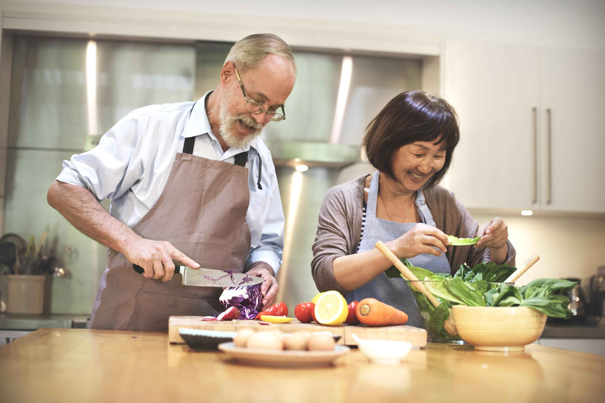
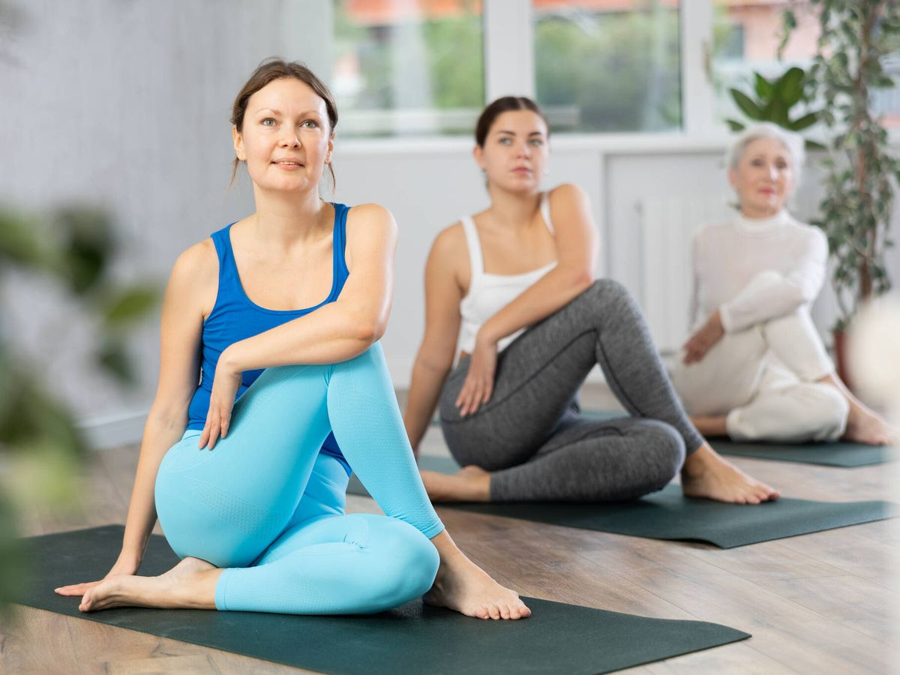
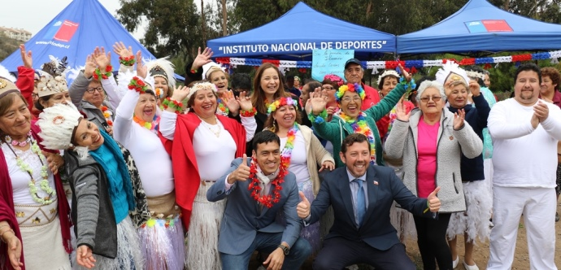
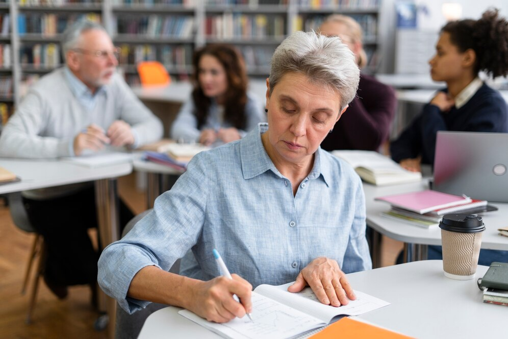

El retiro es frecuentemente el elemento mas importante en el proceso de transición que enfrentan los adultos mayores.Son diferentes las razones por las cuales se deja de trabajar. Asi mismo son diferentes los efectos en cada una de las personas sobre su salud mental y física. Algunas personas lo realizan voluntariamente porque consideran que ya se ha cumplido un ciclo, para otras en cambio los problemas de salud son su principal causa.
Hasta hace muy poco tiempo la imagen que la sociedad tenia de las personas mayores estuvo vinculada con implicaciones negativas. Siempre estuvo relacionada como un colectivo inactivo, improductivo y demandante de servicios, de ayuda, de cuidados… como una carga social, sin embargo y gracias a los avances de la medicina hoy por hoy la esperanza de vida de este grupo de personas es muy superior a la de generaciones anteriores y con mejoras en todos los órdenes.
El propósito de esta página es mostrar las diferentes actividades a través de las cuales los adultos mayores en forma individual y colectiva participan de manera activa en aspectos sociales, culturales, económicos, espirituales y cívicos contribuyendo a su desarrollo y bienestar y el de su familia evitando su aislamiento y dependencia.
Más información

El envejecimiento saludable consiste en llegar a ser adulto mayor en las mejores condiciones posibles, tanto físicas, psicológicas, como sociales. Para lograrlo es importante promover en adultos y jóvenes la salud física y mental por medio de ejercicios regulares, una alimentación saludable, descanso y realizando actividades mentales como la lectura, el estudio, la resolución de problemas matemáticos, entre otros. Con esto es posible mantener la autonomía de los adultos mayores y mejorar su calidad de vida.
Más información

Cuando se trata de la alimentación para mayores, no hay otra alternativa.La nutrición en la tercera edad contiene características especiales y debe seguir un patrón, que ayude a mejorar la calidad de vida de las personas durante esta etapa de sus vidas. A medida que los años pasan, las necesidades nutricionales van cambiando. Cuando se está comenzando a salir de la adultez se hace necesario llevar una dieta equilibrada en la tercera edad en la que se deben reducir las calorías vacías y potenciar el consumo de proteínas, fibras, vitaminas, además de asegurar que la comida provea de calcio, hierro y demás minerales esenciales para la buena salud cuando se trata de la alimentación para mayores, no hay otra alternativa.
La nutrición en la tercera edad contiene características especiales y debe seguir un patrón, que ayude a mejorar la calidad de vida de las personas durante esta etapa de sus vidas. A medida que los años pasan, las necesidades nutricionales van cambiando.
Más información

El ejercicio en los adultos mayores es importante porque contribuye a reducir los niveles de estrés y ansiedad, permite alcanzar o mantener un peso saludable y reducir el riesgo de aumento de peso excesivo. Ayuda a controlar la presión arterial. Posiblemente mejorar o mantener algunos aspectos de la función cognitiva, como su capacidad para cambiar rápidamente entre tareas o planificar una actividad.
Más información

Incentivar y promover las relaciones sociales en las personas mayores es algo muy positivo para su propia calidad de vida. Cuando nos relacionamos, el estado de ánimo mejora y nos aporta grandes beneficios para la salud. Mas allá de realizar actividad física o trabajar es necesario participar en la sociedad ya sea en las relaciones con otras personas, en los eventos sociales y culturales de las comunidad de la que hacemos parte, en la práctica religiosa o espiritual, o en los temas cívicos que nos interesen.
Más información

El aprendizaje en el adulto mayor es una parte importante de la vida humana y es la razón por la que somos capaces de funcionar en el mundo de hoy. Esto ocurre cuando experimentamos cosas nuevas que son diferentes de lo que ya sabemos. De hecho, aprender cosas nuevas en la adultez mayor tiene muchos beneficios. Puede ayudarlo a mantenerse activo e independiente, mantener su cerebro en forma y establecer relaciones con los demás. Aumenta su estado de ánimo participando en diferentes actividades.
Más información